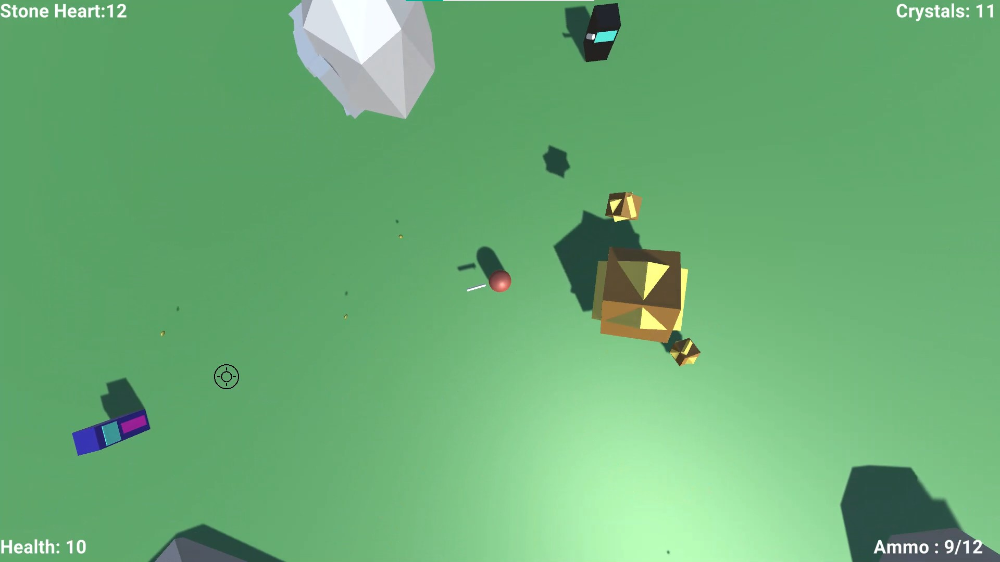
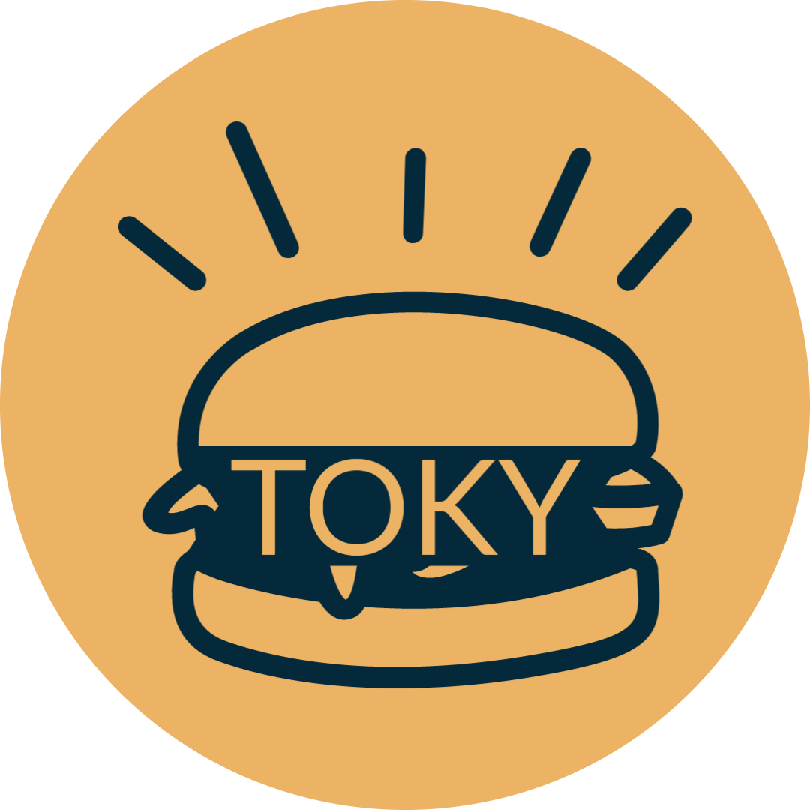
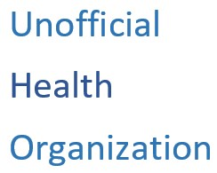

Protect Mother Nature

Protect Mother Nature is the first game I completed a demo for while participating at the HP Gaming Garage Sustainability
Hackathon 2.0 as part of team Whitespace. Using Unity 3D, we were able to develop a prototype of this small indie run and
gun game where the player must defend a crystal in the center of the map from incoming waves of enemies while trying to survive
and collect dropped crystals.
The game won second place during the HP Gaming Garage Sustainability Hackathon 2.0 and the team showcased it
as part of the Discovery Zone in PopConME & GameExpo at the Dubai Esports Festival 2022.
Contributors:
For more details, visit the game on github
Download now!
TOKY Burgers

With the help of my team, we were able to create a mock website for a made-up resturaunt
named TOKY Burgers as a project for one of our univesity courses. The projects target outcome was
to show an understanding of basic HTML and CSS, as well as the web development process and design.
Course: Web and Mobile I
Contributors:
Check out TOKY Burgers
COVID-19 Informational Website

A website including basic but important information regarding COVID-19 such as it's symptoms and effect
on education. The website is under a made-up parody health organization and was made as a group project
for a university course to demonstrate an understanding of HTML and CSS as well as a mobile-first development
process of a responsive website.
Course: Web and Mobile I
Contributors:
Check out Unofficial Health Organization
E-commerce Website
An Angular app that was developed as a course project to apply the OpenUP development process and demonstrate
the teams understanding of several Software Engineering practices such as sprint planning, stand-up meetings,
and documentation. The app uses the Angular framework for the front end and the Spring framework for the backend to
provide a functioning e-store that allows admins to add and manage products, and customers to shop through the store.
Course: Introduction to Software Engineering
Contributors:
The project is currently unavailable for public viewing.